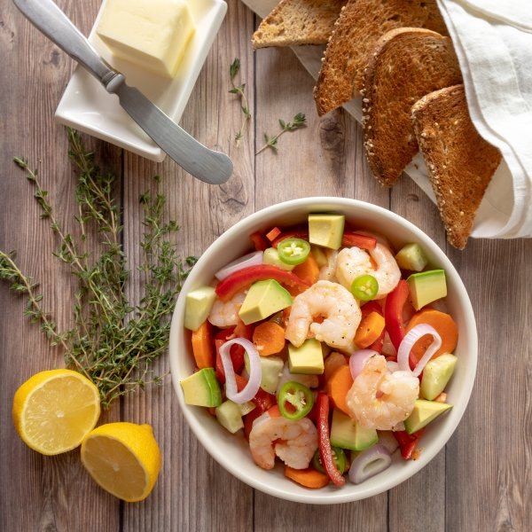

Quick Pickled Spicy Shrimp & Avocado Salad with Buttered Toast Points

Nutrition (per serving)
686.7 kcalCalories
35.2 gProtein
51.5 gCarbs
38.8 gFat
Full nutrition table
| Calories | 686.7 kcal |
| Total fat | 38.8 g |
| Saturated fat | 8.7 g |
| Trans fat | 0.3 g |
| Cholesterol | 229.8 mg |
| Sodium | 1295.4 mg |
| Carbohydrates | 51.5 g |
| Fiber | 14.7 g |
| Sugars | 9.1 g |
| Protein | 35.2 g |
| Potassium | 1271.1 mg |
| Calcium | 283 mg |
| Iron | 4.7 mg |
| Vitamin A | 543.5 IU |
| Vitamin C | 77.8 mg |
| Vitamin D | 7.7 IU |
Cookware
Ingredients
- 2avocados
- 2 mediumcarrots
- 1English cucumber
- 1 small pkgfresh thyme
- 2 clovesgarlic
- 1jalapeño pepper
- 2lemons
- 1 ½ lbraw peeled shrimp, fresh or frozen
- 1red bell pepper
- 1shallot
- 8 sliceswhole grain bread
- apple cider vinegar
- black pepper
- butter, unsalted
- coriander, ground
- extra virgin olive oil
- salt
Steps
- Wash and dry thyme. Add thyme sprigs, water, vinegar, salt, and coriander to a large pot; cover and bring to a boil over high heat.1 small pkg fresh thyme
8 cup water
1 cup apple cider vinegar
2 tbsp salt
2 tsp coriander - If using frozen shrimp, place them in a colander and run under cold water to thaw them slightly and remove any ice crystals. (If using fresh shrimp, skip this step.)1 ½ lb raw peeled shrimp, fresh or frozen
- Once the liquid comes to a boil, uncover, add shrimp, and stir for a few seconds. Remove from heat, and let the shrimp pickle in the cooking liquid while you prepare the rest of the salad, about 20 minutes.
- Meanwhile, wash and dry the fresh produce.2 lemons
1 jalapeño pepper
1 red bell pepper
1 English cucumber
2 medium carrots
2 avocados - Grate the zest from the lemons and transfer to a large bowl, then juice the lemons into the same bowl.
- Peel and mince the garlic; transfer to the bowl.2 cloves garlic
- Add additional vinegar, oil, salt, and pepper to the bowl and whisk to combine the dressing.2 tbsp apple cider vinegar
¼ cup extra virgin olive oil
½ tsp salt
½ tsp black pepper - Thinly slice the jalapeño into rounds (be careful, with jalapeños, do not touch your eyes and ensure you wash your hands after handling or wear gloves while preparing).
- Peel and thinly slice the shallot into rings. Add shallots and jalapeños to the bowl with the dressing.1 shallot
- Seed and slice bell pepper into thin strips. Peel and medium dice the cucumber. Peel and thinly slice carrots into rounds. Add vegetables to the bowl with the dressing.
- Halve and pit avocados; scoop out the flesh and medium dice. Add to the bowl.
- Drain the shrimp and discard the liquid. Remove tails, then add shrimp to the bowl with the vegetables and stir to combine the salad; set aside.
- Toast and butter the bread, then slice on the diagonal to make toast points.8 slices whole grain bread
2 tbsp butter, unsalted - To serve, divide shrimp salad between bowls. Enjoy with a side of buttered toast points for dipping.